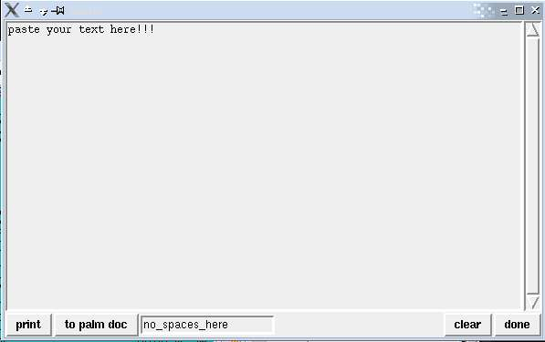

paste.pl
rob miller -- rob at janerob dot com
this is a quick hack in perl/tk to make it easier getting bits of text
off your computer and on to your palm pilot or printed out. quite
simply, you paste your text into the window, fill in the name for the
palm doc file or document title (no spaces allowed, use undersocres or
something), and click the
appropriate button. if the palm pilot is the destination, then you
need to have it hooked up and be ready to start the sync.
for the
pilot it uses pilot-xfer, part of the pilot-link suite and txt2pdbdoc
to generate the doc file. for printing
it uses a2ps via
this script (called 'a2psb').
here is the source code, which you might have
to tweek a bit for yourself / your system.

24 february 2007